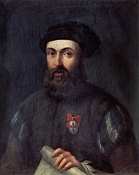
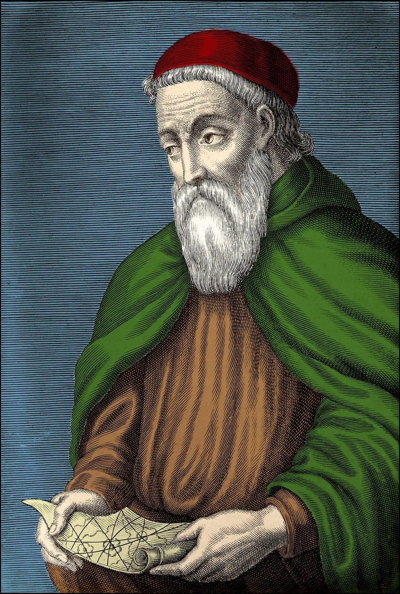

I grandi navigatori

Vasco da Gama
Punto chiave
Ha aperto la rotta diretta verso l’India aggirando l’Africa.
Perché è importante?
Grazie al suo viaggio, il Portogallo è riuscito a commerciare direttamente con l’Oriente, rivoluzionando gli scambi.

Ferdinando Magellano
Punto chiave
Ha organizzato la prima spedizione per circumnavigare il globo.
Perché è importante?
Anche se lui non completò il viaggio (morì nelle Filippine), la sua impresa ha dimostrato che la Terra è rotonda e ha aperto nuove rotte per il commercio.

Amerigo Vespucci
Punto chiave
Ha capito che le terre scoperte da Colombo non facevano parte dell’Asia, ma erano un “Nuovo Mondo”.
Perché è importante?
Il continente americano prende il suo nome, perché i suoi viaggi hanno contribuito a riconoscere l’esistenza di un nuovo continente.

Cristoforo Colombo
Punto chiave
Nel 1492, cercando una rotta verso l’Asia, ha scoperto il continente americano.
Perché è importante?
Il suo viaggio ha segnato l’inizio delle esplorazioni e delle successive colonizzazioni europee nelle Americhe.